축제 소개
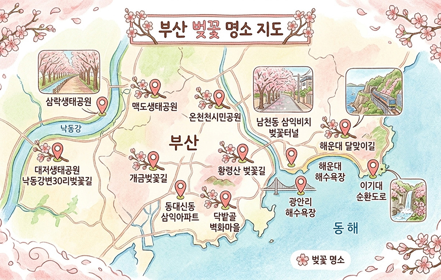
축제 체험
부산 벚꽃축제에서는 전통 한복 체험 부스를 운영해, 축제를 찾은 시민들이 벚꽃길을
배경으로 한복을 입고 사진을 남길 수 있도록 합니다.
개화 시작: 3/25
만개 절정: 4/1~4/3
최적 방문:4/1~2
국립해양박물관 주차장
(도보 5분, 저렴)
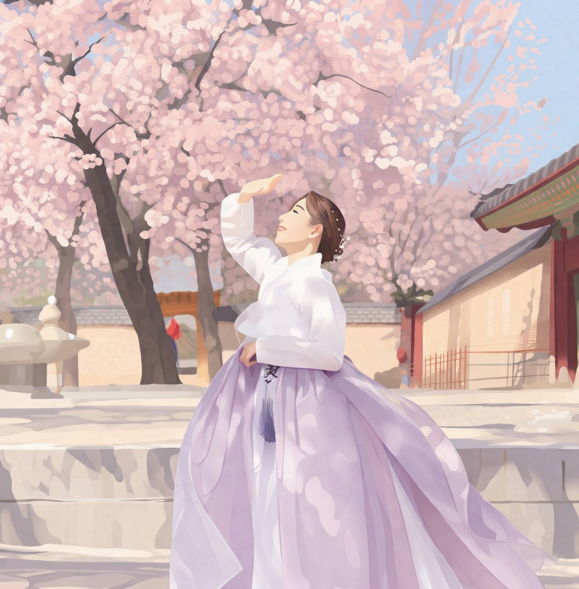
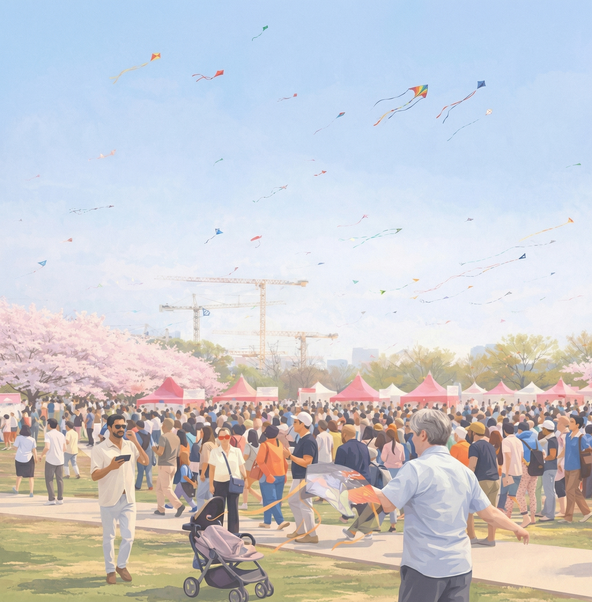
축제 구간 곳곳에 소규모 플리마켓이
설치되어, 지역 작가·소상공인들이 직접 만든 공예품,
잡화, 디저트 등을 판매합니다.
개화 시작:3/26
만개 절정: 4/2~4/4
최적 방문:4/2~3
해월정 달맞이길 노상공영주차장
(만차 시 대기)
중·소형 야외 공연장에서 진행되는 초청 가수 무대는,
벚꽃 배경과 조명이 어우러진 실감 나는 공연 사진이 많이 촬영되며
인디 밴드부터 대중가수까지 범위를 두고 기획됩니다.
개화 시작: 3/27
만개 절정: 4/3~4/5
최적 방문:4/3~4
삼락생태공원 제4주차장 P4
(일찍 가야함)
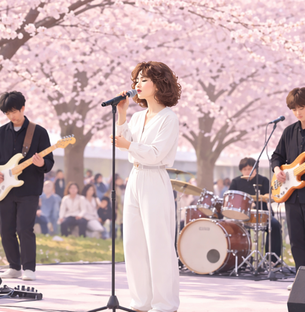
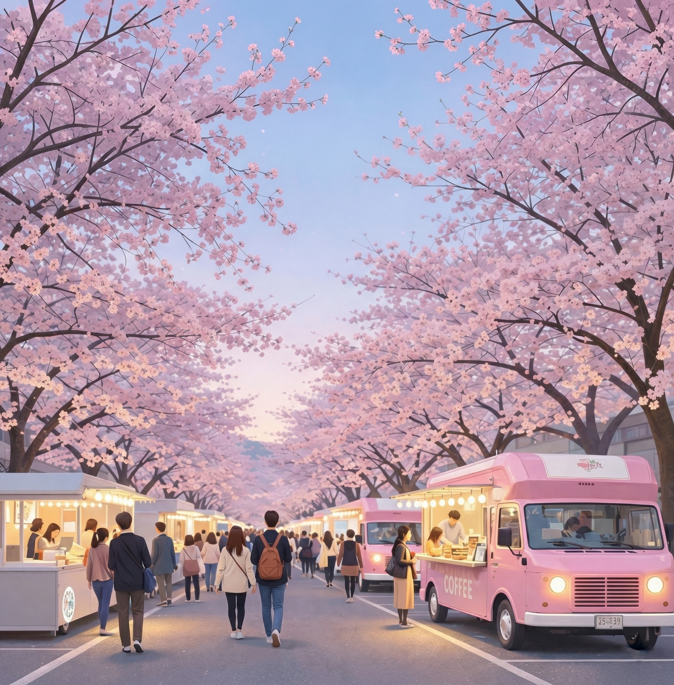
분홍·흰색 계열 푸드트럭들이 꽃길과 조화를 이루며
조명과 함께 야간 풍경을 완성해, 먹거리와 사진 찍기
모두를 만족시키는 대표 경험
포인트입니다.
개화 시작: 3/27
만개 절정: 4/4~4/6
최적 방문:4/4~5
대저생태공원 제1주차장
강서구청 임시주차

만개한 벚꽃 아래를 걸으며 기록을 남기거나, 단순히
산책처럼 여유롭게 즐기는 방식으로 운영되어, 건강한 축제 분위기를
만들어 주는 대표적인 체험형 프로그램입니다.
개화 시작: 3/23
만개 절정: 3/30~4/2
최적 방문:3/31~4/1
온천장역 공영주차장
(1시간 2천원)
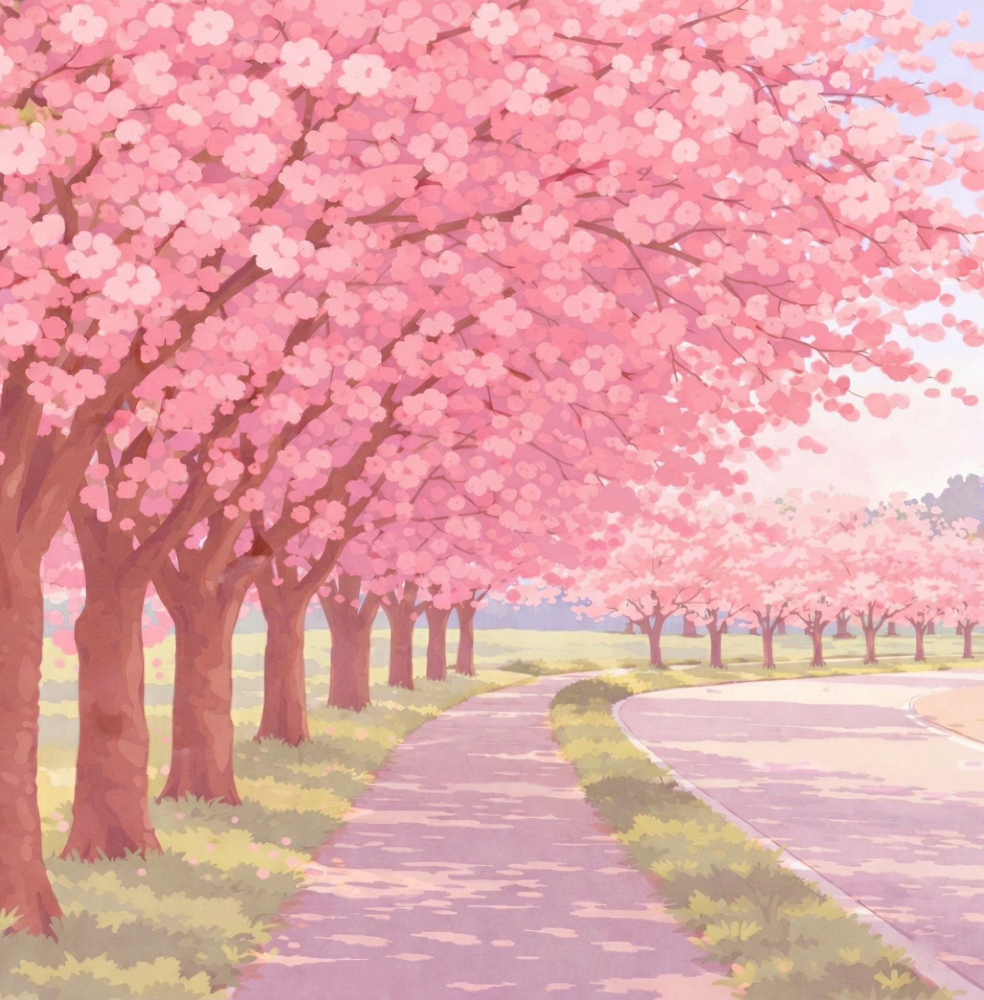
부산 벚꽃물결 축제
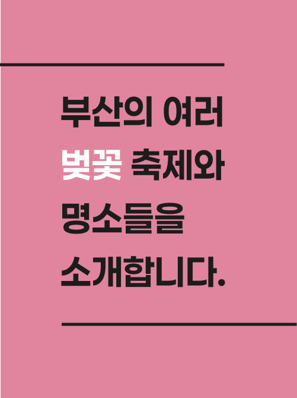
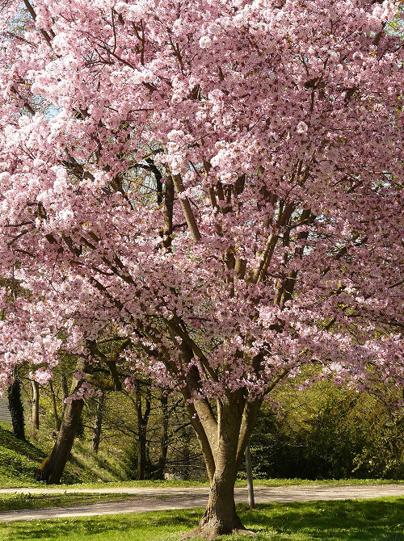
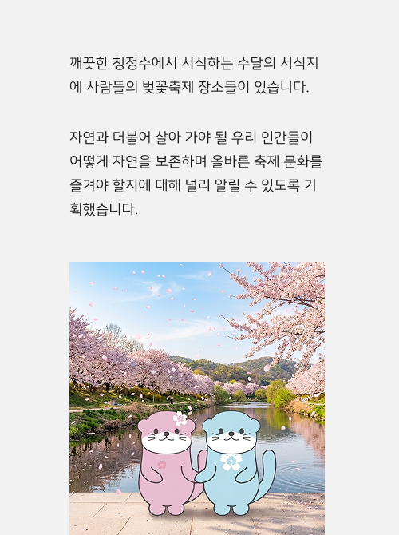
제품
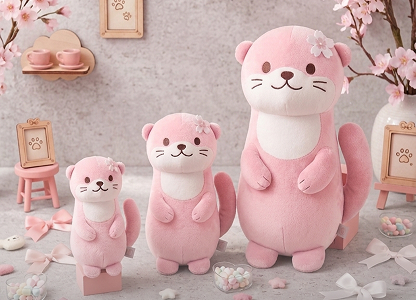
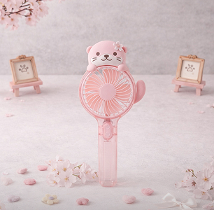